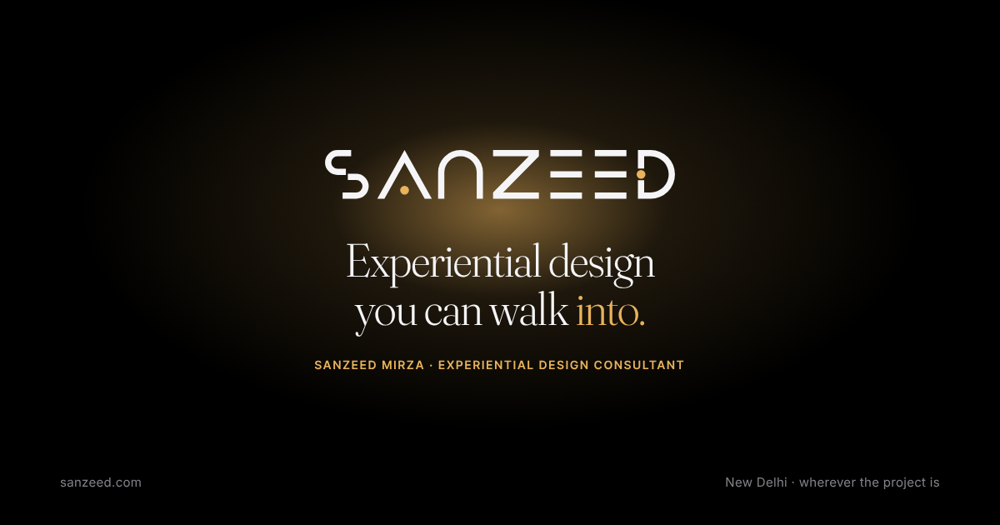

og:image sanzeed-og--default-1200x630 · og:title Sanzeed Mirza — Experiential Design Consultant Card shapes are generic approximations of each platform; verify in the platform’s own debugger before launch.
Professional network feed (LinkedIn-style)
Sanzeed MirzaExperiential Design Consultant · New Delhi
The doors are open: sanzeed.com — museums, pavilions and shows you can walk into.

Sanzeed Mirza — Experiential Design Consultantsanzeed.com · 2 min read
Sanzeed Mirza@sanzeed · 5 Nov Experiential design you can walk into.
sanzeed.com
From sanzeed.com
twitter:card summary_large_image · 1.91:1 shown in full.
Chat preview (WhatsApp-style)
Sanzeed Mirza — Experiential Design ConsultantMuseums, experience centres, pavilions, memorials and projection shows — one vision, from the brief to opening night.sanzeed.com
https://sanzeed.com
13:12
WhatsApp shows the image at the bubble width; the square 1200 × 1200 variant gives a taller thumbnail in some clients.